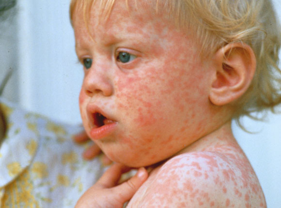

Measles, mumps, and rubella are viral diseases. All can be very serious. Measles starts as a fever, cough, runny nose, conjunctivitis (pinkeye), and a red, pinpoint rash that starts on the face and spreads to the rest of the body. If the virus infects the lungs, it can cause pneumonia. The mumps virus usually causes swelling in glands just below the ears, giving the appearance of chipmunk cheeks.
Rubella is also known as German measles. It can cause a mild rash on the face, swelling of glands behind the ears, and in some cases, swelling of the small joints and low-grade fever. Most children recover quickly with no lasting effects. But if a pregnant woman gets rubella, it can be devastating. If she's infected during the first trimester of pregnancy, there's at least a 20% chance her child will have a birth defect such as blindness, deafness, a heart defect, or mental retardation.
Measles causes fever, rash, cough, runny nose, and red, watery eyes. Complications can include ear infection, diarrhea, pneumonia, brain damage, and death.
Mumps causes fever, headache, muscle aches, tiredness, loss of appetite, and swollen salivary glands. Complications can include swelling of the testicles or ovaries, deafness, inflammation of the brain and/or tissue covering the brain and spinal cord (encephalitis/meningitis) and, rarely, death.
Rubella, causes fever, sore throat, rash, headache, and red, itchy eyes. If a woman gets rubella while she is pregnant, she could have a miscarriage or her baby could be born with serious birth defects.
Common symptoms include: fever, rash, loss of appetite, tiredness, cough, runny nose, painful red eyes, ear infections, diarrhoea. Children who get measles usually have to spend about 5 days in bed and have 10–14 days off school, if there are no serious complications.
Serious complications include: pneumonia, fever induced convulsions or fits, inflammation of the brain (encephalitis). Children may be hospitalised. A rare late complication of measles is subacute sclerosing panencephalitis (SSPE), which causes progressive brain damage and is always fatal.
What are the treatments and Prevention?